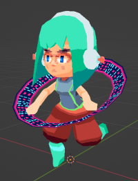
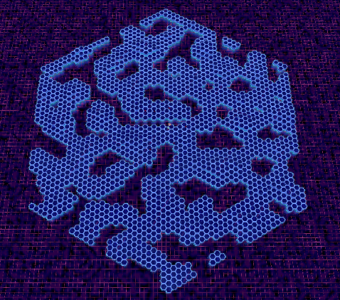
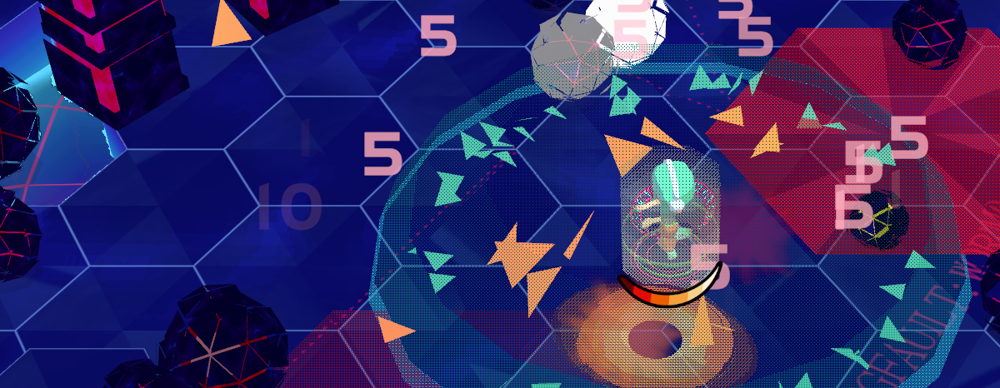

10 Minutes to Y2K
Cyberspace-themed Vampire Survivors-like.
10 Minutes to Y2K was made in Unity for GMTK gamejam '22. I was the lead programmer, gameplay designer, and 3d+vfx artist. I worked with a small team:
Casey "Boz" Weeks: Game Design, Dice/HUD UI/UX, Programming - https://boz-float.itch.io/
c0hil: Illustration - Title Screen and Icons - https://www.instagram.com/c0hil/?hl=en
Edward Newton: Enemy Mechanics and Additional Programming - https://aguynamededward.itch.io/
Haberworks: Music - https://soundcloud.com/haberworks
John D. Leon: Sound Effects - https://www.johndleon.com/
Goals Gameplay Mechanics Weapons Upgrades and Strategy Art and Arena
Project Goals
Gameplay Mechanics
Incorporating a jump button was a big departure from our source formula. It was important that there was a good reason for jumping to be in the game. We accomplished this through:
- 3D map terrain, with elevated tiles and chasms of harmful 'cybersea'.
- Enemies that were fast and often surrounded you, but could be jumped over with proper timing.
- Abilities that interacted with the jump button - hold it to float and press it again to slam.
I adapted some code from my Dropchute project for collision interactions, enemy hitstop, and character control. While enemy behavior is simple (just moving directly to the player or to a point), it was a priority to make large numbers of enemies move smoothly across the map. I used the RVO2 library which simulates collision avoidance for large numbers of agents. This is more performant than using Unity physics, and creates a better flowing movement of enemy agents, even when they want to move in opposing directions.
Words helped out with enemy design, with ideas for intimidating monoliths that block aerial movement and hornet-type enemies that are very quick but periodically have to rest briefly. In addition to the slow virus hordes, I created a bunch of leveled variations of these enemies that could be used in increasingly difficult attack waves.
The most interesting part of the game design for me was around designing the weapons and how they would interact with upgrades.
Weapons
Upgrades and Strategy
There are 10 upgradable stats that can be leveled.
- Attack Size
- Cooldown reduction
- Damage modifier
- Duration increase
- Jump height
- Move speed
- XP collection range
- Projectile count
- Projectile speed / other
In addition a heal upgrade can show up if you have less than 90% health. Each weapon can be improved by multiple stats, so coordinating your weapon and upgrade levels is vital to maximize synergy. A nice thing about making these stat upgrades for a short game is that each level could make a big impact. It's fun to see your attacks get 50% bigger or immediately feel lower cooldowns after a single point into those upgrades.
There are three strategies / archetypes players might succeed with:
Projectile-focused strategies are definitely the easiest for newer players to get into, likely because it's hard to go wrong with upgrades and often you're strong mow down opponents before needing to dodge. However, if you haven't collected enough XP, the endgame enemies can be overwhelming.
With upgrades to the jump height and attack size upgrades, a Delete strategy can eventually clear the whole screen of small enemies and heavily damage the rest. The midgame is often more difficult for Delete-focused strategies, requiring precise maneuvering to slam as much as possible from elevated tiles without taking damage. Cloud, Backup, and movement speed can aid in survivability and help line up big slams.
Quarantine can also be the main damage dealer. With enough upgrade points in cooldown reduction, attack size, and damage, the whole screen will be blanketed in blasts. But you'll need to be creative in the early and midgame when Quarantine shots are unreliable in targeting the greatest threats.
Art and Arena
We were inspired by the visual style of the Japan-only PS1 game Love and Destroy, which only has a couple of recorded examples online at this time. I really like the game's visual effects, but I didn't have enough time to emulate them properly for this jam. The game's unique color palette did make a big impact on us, as well as the character design.
The character, who I believe we called ViVi, was made in Blender. It was my first time trying to animate hair with an armature and while it's minimally noticeable I think it came out okay. The look of chunky PS1 hands slapping keyboards to type is really funny to me so that's what she does to fire off the attack programs in the game.

I made a shader for the 'cybersea' that uses scene color and depth to bend the tile supports underwater. Noise layers create vertex displacement for waves and coloration. The tile tops emulate some refraction/parallax effects, plus some nonsense scrolling text for flavor.

I learned about the math and implementation of hexagonal grids from Red Blob Games' excellent tutorial. Each run, the map is created from Perlin noise that is randomly scaled between thresholds, and the height required for a tile to be generated as water or land is also randomized. So some maps are flatter, have more islands and waterways, or more hills and pits. I've found this can make certain strategies better or worse.
It was fun to work with the team, who all contributed towards the design and helped gather feedback that really improved the game. The music and sounds came out great, props to Haberworks and John D. Leon. The cover and icon art by c0hil are fantastic. Edward was clutch in implementing some features I didn't have time for during the jam. Boz and I worked together to figure out the game mechanics and he did a great job with the interface and UX.
